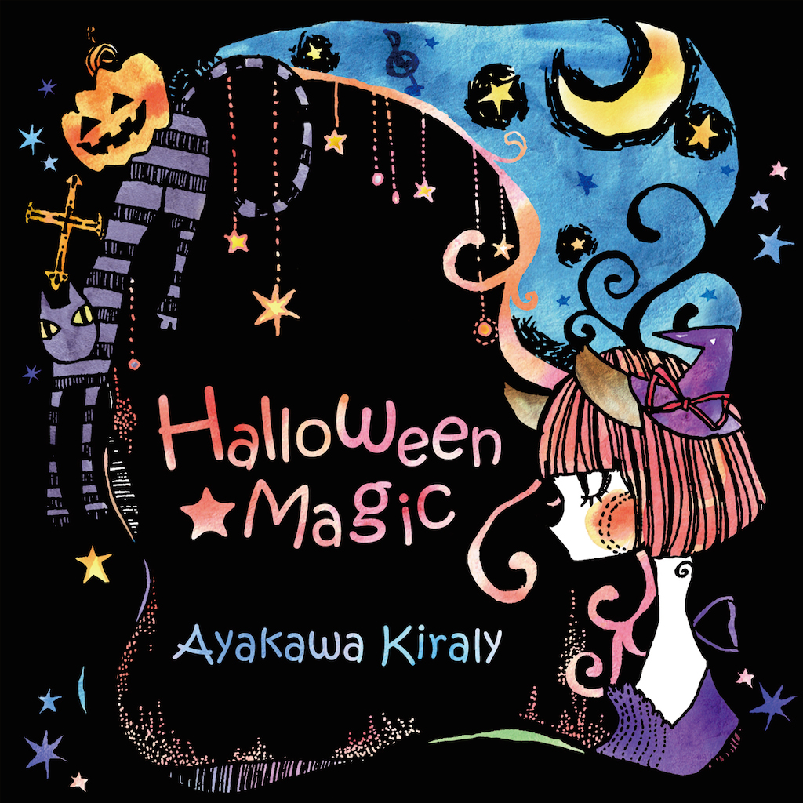
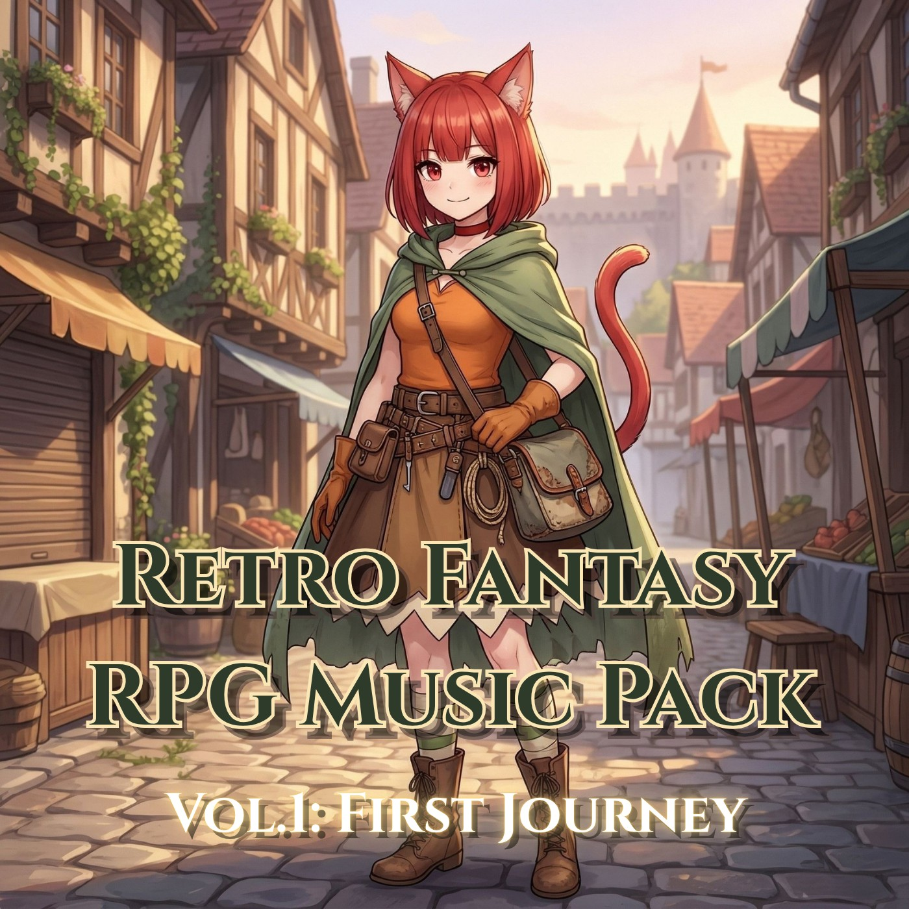
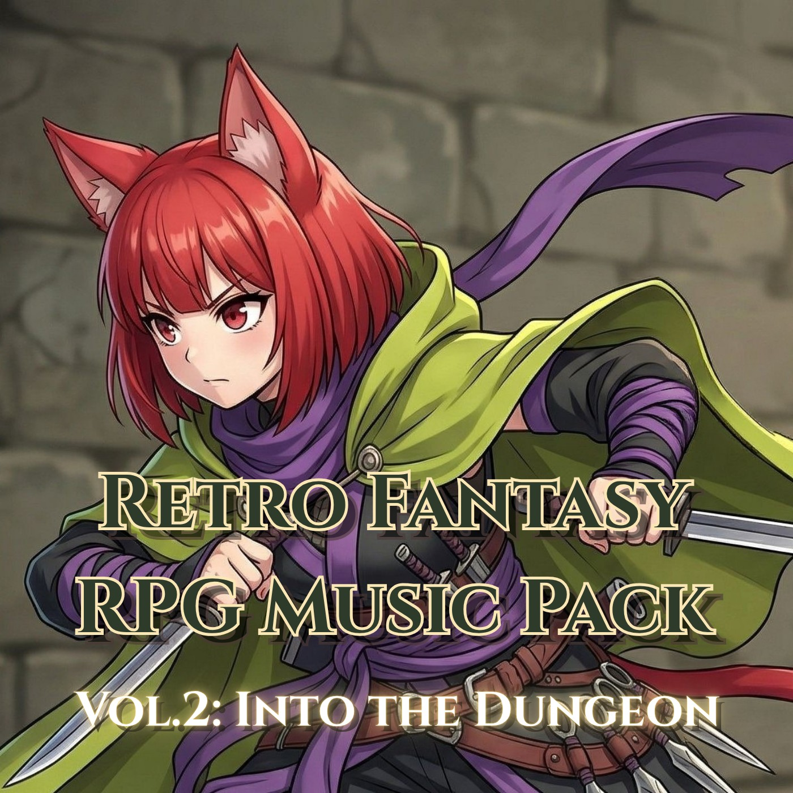
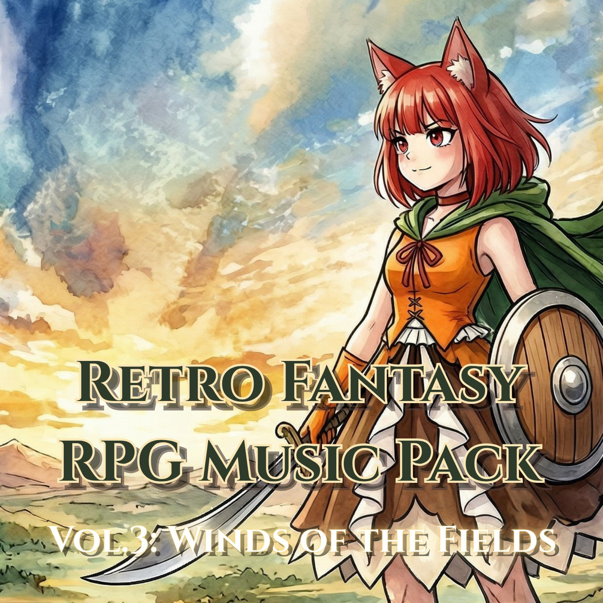
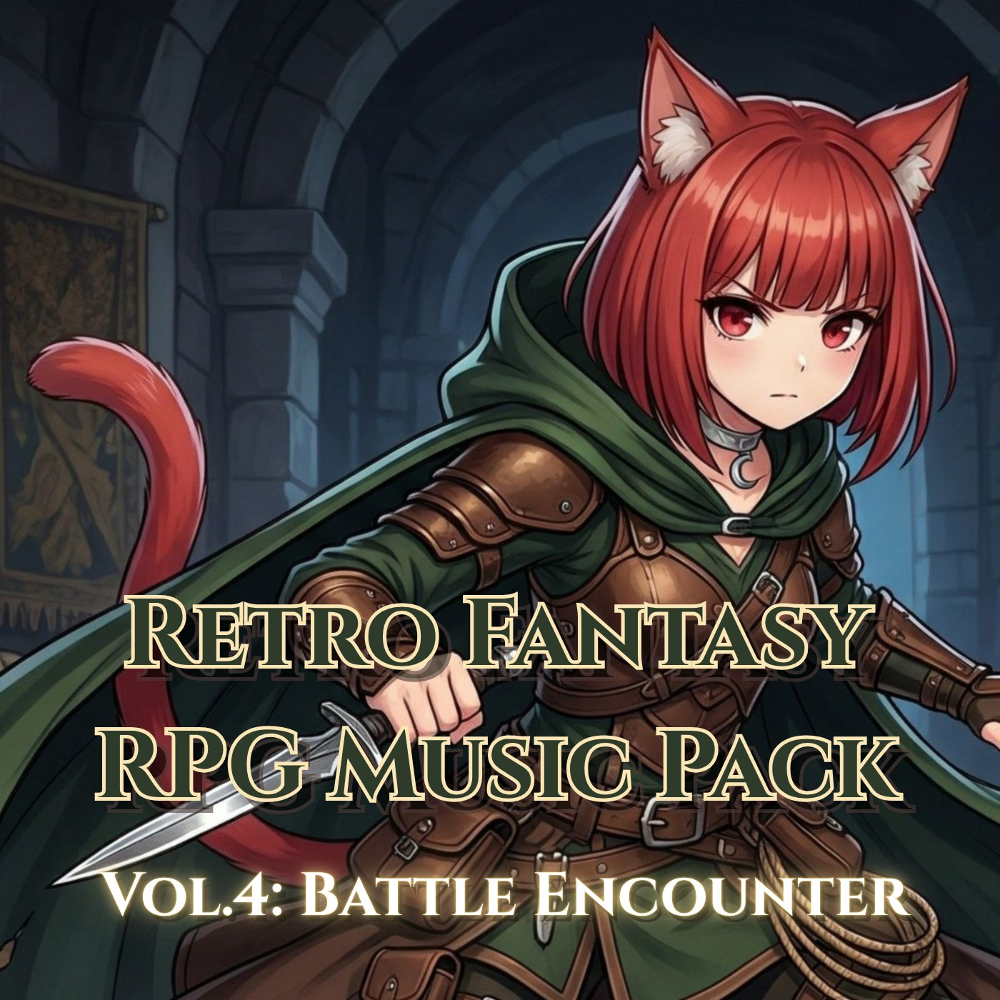
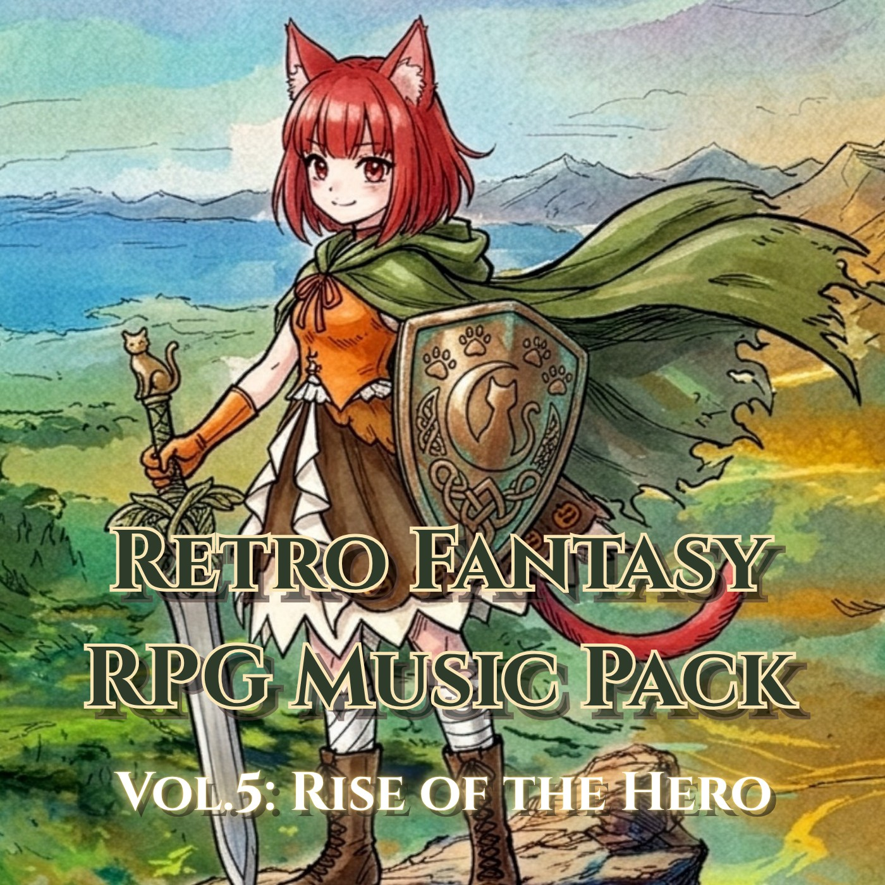
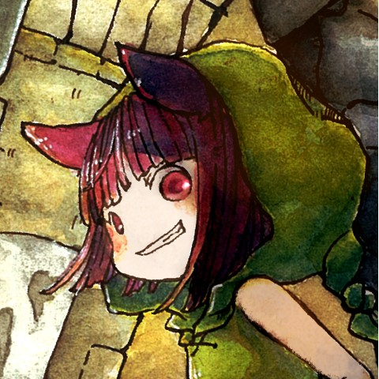

- キラリ音楽工房 -
Original Music for Games

ハロウィン風のちょっと不思議で楽しい音楽です。
Spooky and playful Halloween-themed music.
Listen on YouTube
レトロファンタジーＲＰＧ音楽パック
第１弾：はじまりの旅

レトロファンタジーＲＰＧ音楽パック
第２弾：ダンジョンへの潜入

レトロファンタジーＲＰＧ音楽パック
第３弾：野原の風

レトロファンタジーＲＰＧ音楽パック
第４弾：迫り来る戦い

レトロファンタジーＲＰＧ音楽パック
第５弾：英雄の目覚め

綾河キラリ / Kiraly Ayakawa
Kiraly (pronounced: Kirari)
Composer & Indie Game Developer
ゲームや動画に使える音楽素材制作をメインに活動している、
ネコ娘型アバターだよ！
他にも、ゲーム制作やライブ配信なんかも、やってたりするよ♪
I’m a catgirl avatar creating music assets for games and videos.
I also create indie games and occasionally stream live ♪